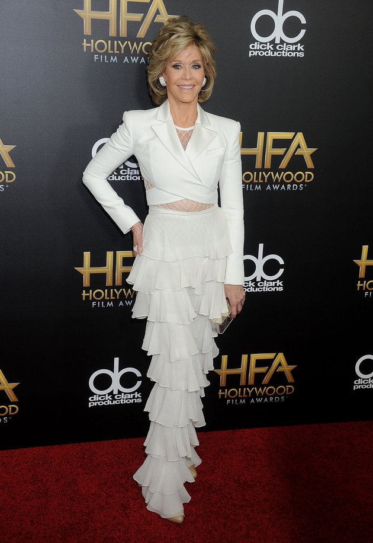

Jane Fonda Wears A Crop Top And Mesh, Is Peak Crop Top Goals
Jane Fonda ruled the red carpet at the 19th annual Hollywood Film Awards Sunday night in an all-white couture look from the fashion house's spring/summer 2016 collection. Staying true to her suit-loving heart, the 77-year-old opted for exposing her midriff in a mesh bodysuit underneath a cropped blazer and ruffled pants.
The actress, who took home the "Hollywood Supporting Actress" award for her role in the upcoming film "Youth," calls her relationship with fashion "strained, but looks pretty at ease in this chic ensemble.
With the rest of awards season swiftly approaching, we can't wait to see what other awesome looks Fonda steps out in. For now, excuse us while we spend the rest of the day attempting to achieve those abs.